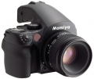

器材库 > 大中画幅可换镜头数码相机 > DM40

规格总览
产品类型
大中画幅可换镜头数码相机
发布日期
2010-03-01
厂家推荐价格
21,990.00 （美元）
影像规格
影像传感器
CCD
影像传感器尺寸
44x33 mm
有效像素
4000万
最大解像度
7360x5562
静态图像格式
RAW
镜头和对焦
兼容镜头
玛米亚AF镜头、玛米亚645MF镜头和哈苏V系列镜头
曝光控制
快门类型
焦平面快门
取景器/显示屏
LCD尺寸
3.5英寸
LCD特性
触摸屏
文件输入/输出
记录媒介
CF
其它
备注
价格包含Mamiya D 80/2.8镜头
该产品暂无存档的网友点评
产品图 / 样片
玛米亚 DM40
评测 / 相关文章
- 详细内容 （存档）